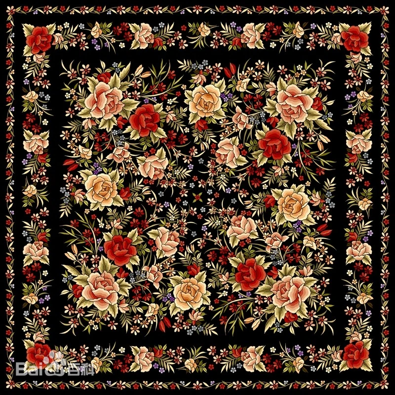
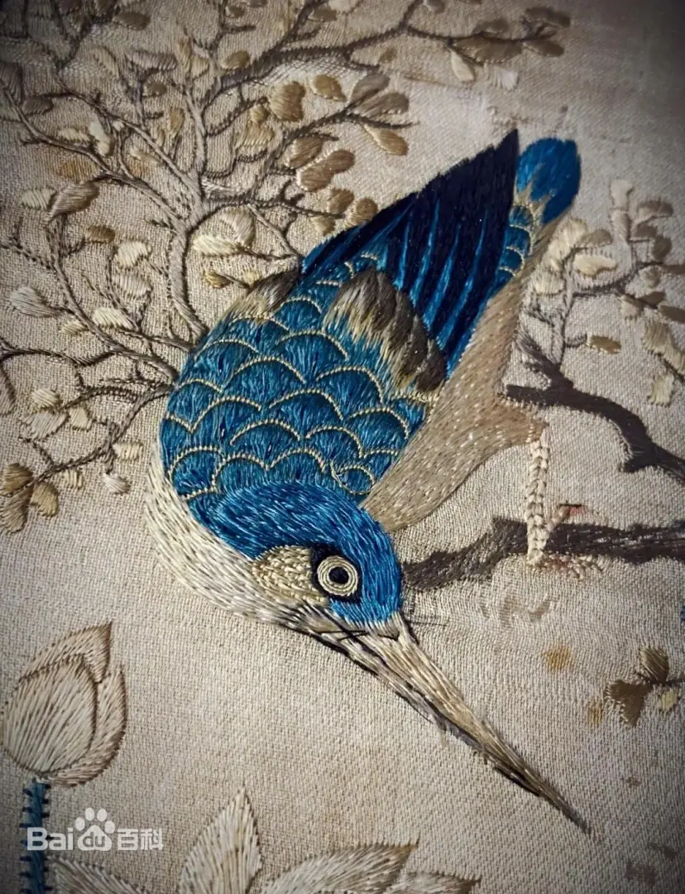

直针
最基本的针法，针脚整齐排列，用于勾勒轮廓和填充平直区域。
基于原生 HTML、CSS 与 JavaScript 构建的多页面展示体系，覆盖起源历史、文化传承、核心技艺、创新案例与代表作品。


广绣是中国四大名绣之一，起源于唐代，2006年入选首批国家级非物质文化遗产名录
年历史传承
从唐代卢眉娘到现代
种传统针法
基础、象形、金银线绣
年入选非遗
首批国家级非遗名录
位传承人
国家级、省级传承人
广绣拥有基础针法、象形针法、金银线绣、特色技法四大类共40余种针法
最基本的针法，针脚整齐排列，用于勾勒轮廓和填充平直区域。
长短针交替套叠，形成自然渐变效果，是广绣最具特色的针法。
以金银线缀于绣面，形成光泽与层次丰富的纹样结构。
在相邻绣面间留0.5毫米空白线条，使图案层次分明。
从唐代卢眉娘到现代传承人，跨越千年的广绣发展历程
卢眉娘能于尺绢绣《法华经》七卷，被奉为广绣始祖。
1514年葡萄牙商人将广绣带入欧洲，成为"中国给西方的礼物"。
1757年"一口通商"，广州状元坊成为名扬海内外的"刺绣一条街"。
2006年入选首批国家级非遗，广绣与时尚、文创结合焕发新生。
数字化展示、时尚跨界、文创开发、教育普及等多元创新路径
通过3D投影、AR技术展示针法细节，让观众虚拟体验刺绣过程。
与国际时装品牌合作，将广绣融入现代服装设计，参加巴黎时装周。
推出广绣包包、丝巾、首饰等日用品，让非遗走进现代生活。
从故宫博物院藏《百鸟争鸣图》到现代《荔枝红》，经典作品赏析
清代 · 故宫博物院
采用十余种针法绣制百鸟、花卉，色彩华丽，构图繁密。
1986年 · 陈少芳
以岭南荔枝为主题，现代广绣的代表作品。
19世纪 · 十三行博物馆
融合中西风格的外销广绣精品，海上丝绸之路见证。